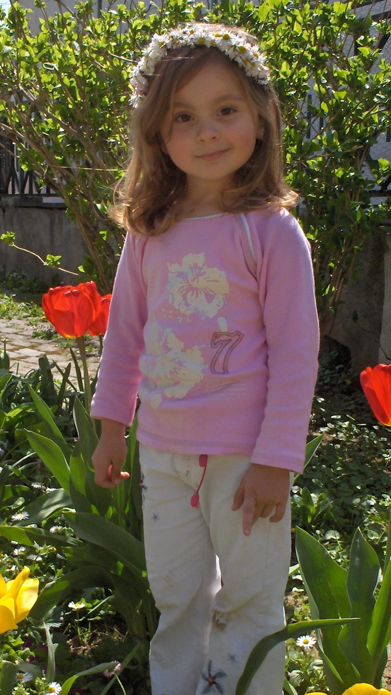
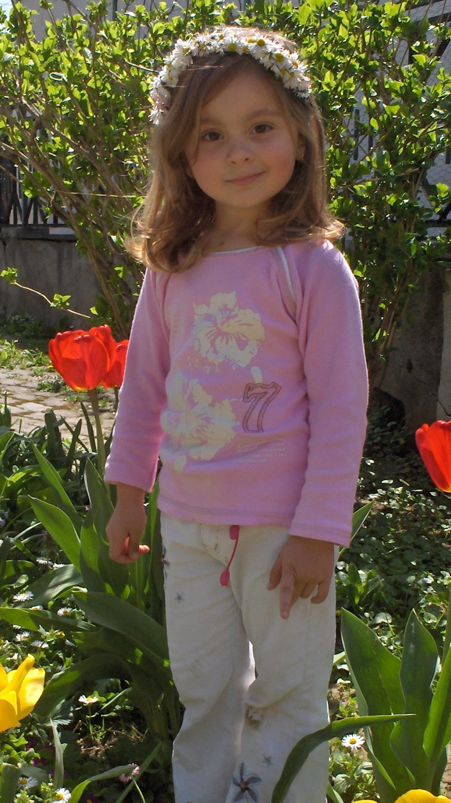

Name: Monika Spiroska
Age: 19
Nationality: Macedonian
Zodiac sign: Virgo
MBTI: INFP
Hey there and welcome to my little corner of the web.
I'm Moni and this page is my digital playground, a cozy, retro space where I get to blend my love for programming, design and all things creative.
Ever since I was a kid, I’ve been endlessly inspired by the internet. I grew up playing old computer games like Poptropica, Club Penguin, The Sims, Vortex Point and Minecraft.
Sitting at the computer felt like entering a whole different world where every window opened a portal to something magical. That is the main reason I chose to study Computer Science (Applied Information Technologies), so that someday I can make something as interesting as the things I enjoy.
One thing that everyone knows about me is that I love animals. As a kid I thought I would be a vet when I grow up but realized that I was too emotional for the job. I have two pets, a cat and dog.
I love to travel around the world and explore new places. Every destination holds a unique story, new foods, cultures and adventures waiting to happen. Out of all the places I haven't been to Tokyo, Japan is on top of my bucket list.
To get to know me better continue exploring the rest of the page :)
 
